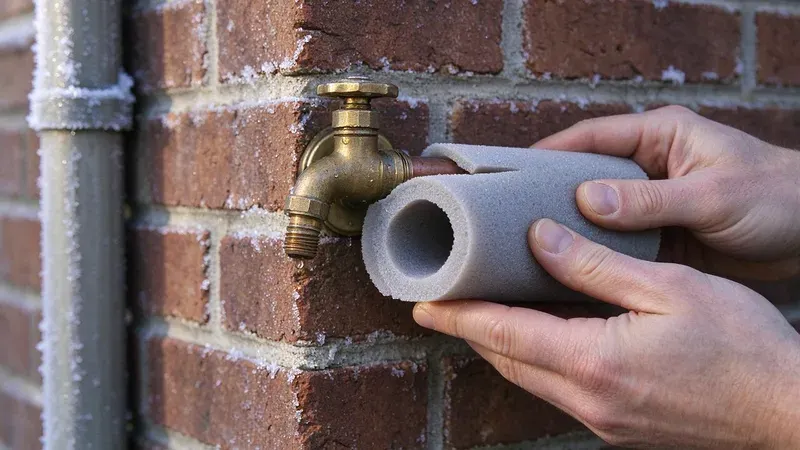
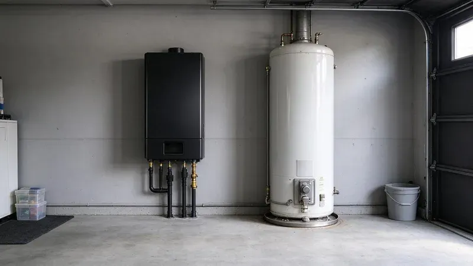
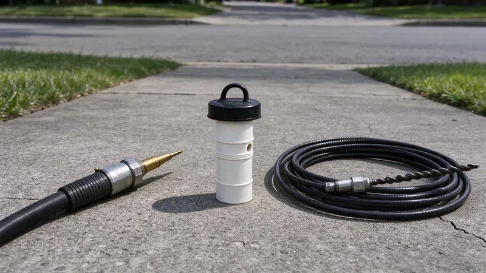

Plumbing Tips & Updates From JKV Plumbing
 15Oct, 2026
15Oct, 2026Slab Leak Warning Signs Every Wyoming Homeowner Should Know
Plenty of Wyoming houses sit on a concrete slab with the water lines poured in below. Here is how to catch a leak early.

6Oct, 2026How to Protect Your Pipes Before the Next Wyoming Freeze
Long winters and rare cold snaps both split pipes. A few cheap steps keep Wyoming plumbing intact overnight.
 27Sep, 2026
27Sep, 2026Hard Water in Wyoming: When a Water Softener Pays for Itself
The white crust on the faucet is the part you can see. This is what scale does where you cannot see it, and when softening makes sense.

18Sep, 2026Tankless vs. Tank Water Heaters: What Works Best in Wyoming
Each type of water heater fits certain houses. Here is how to pick the right one in Wyoming.
 9Sep, 2026
9Sep, 2026Kitchen Sink Backups: Causes, Prevention and Quick Solutions
Grease and coffee grounds team up with hard water scale inside kitchen drains. Here is how to clear a backup and keep the next one away.
 31Aug, 2026
31Aug, 2026Underground Pipe Damage: Common Causes and Modern Repair Solutions
A broken pipe underground no longer means a trench across the yard. Here is how buried lines fail and how it gets fixed.

22Aug, 2026Hydro Jetting vs. Snaking: Which Drain Cleaning Method Do You Need?
A drain snake and a jetter fix different problems. Here is how to tell which one your line actually needs.
 13Aug, 2026
13Aug, 2026Why a Sewer Camera Inspection Belongs on Every Wyoming Home Inspection
The standard home inspection stops at the floor drain. Here is why Wyoming buyers add a sewer scope before closing.
Have a plumbing question we did not cover?
Our team is happy to talk it through and give you a straight answer.